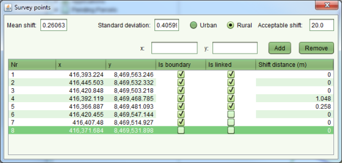
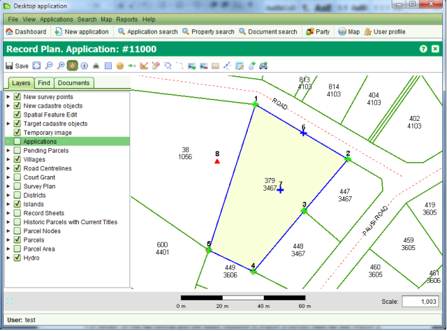

Survey points represent coordinates recorded on a survey plan. They can be located directly on the map via a single click with theCreate / Link Survey Points tool , loaded from a survey data file or the coordinates can be manually entered using the Survey Points screen which can be accessed using theSurvey Points tool.

Survey Points Screen
By default, new survey points are created as boundary points. You can change a survey point to a traverse point by clearing the Is boundary checkbox. Traverse points are displayed on the map as red triangles.
You can also link a boundary point to the node of a target parcel using the Create / Link Survey Points tool. Simply select the new boundary point and drag it close to the target parcel node. The new boundary point will snap to the location of the target parcel node and the blue cross will change to a green cross to confirm the linkage. The Survey Points screen also indicates when the boundary point is linked. To unlink the boundary point, clear the Is linked check box.

Linked Boundary Points
If you need to delete a survey point that has been added in error, select the point from the list and click the Remove button.
Coordinate data can also be loaded from a Comma Separated Values (CSV) text file. Loading a CSV coordinate file requires attaching a .csv file as a document to the application and using the Add Points button on the Documents tab of Record Plan to import the data. For details on the file format and the steps required to import a survey data file see Import a Survey Data File.